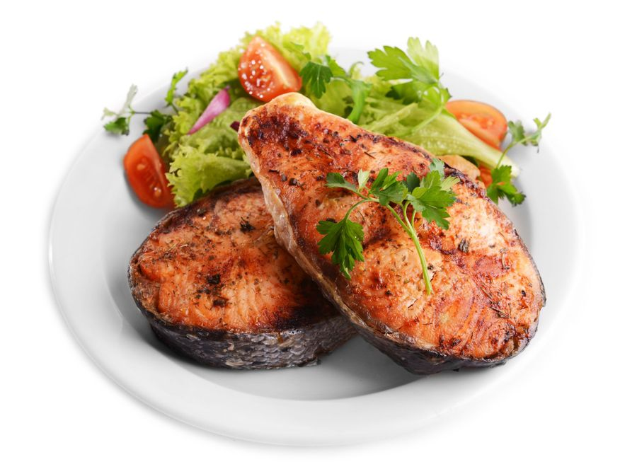
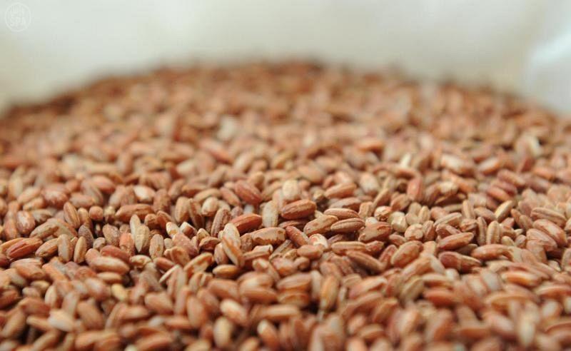
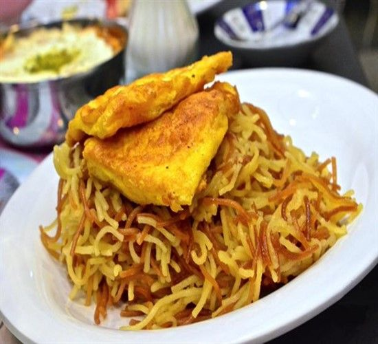
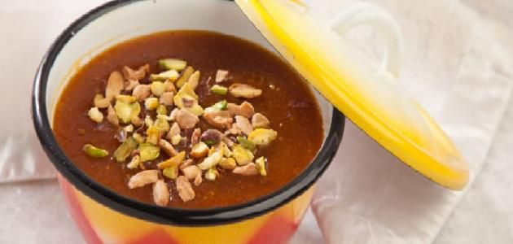
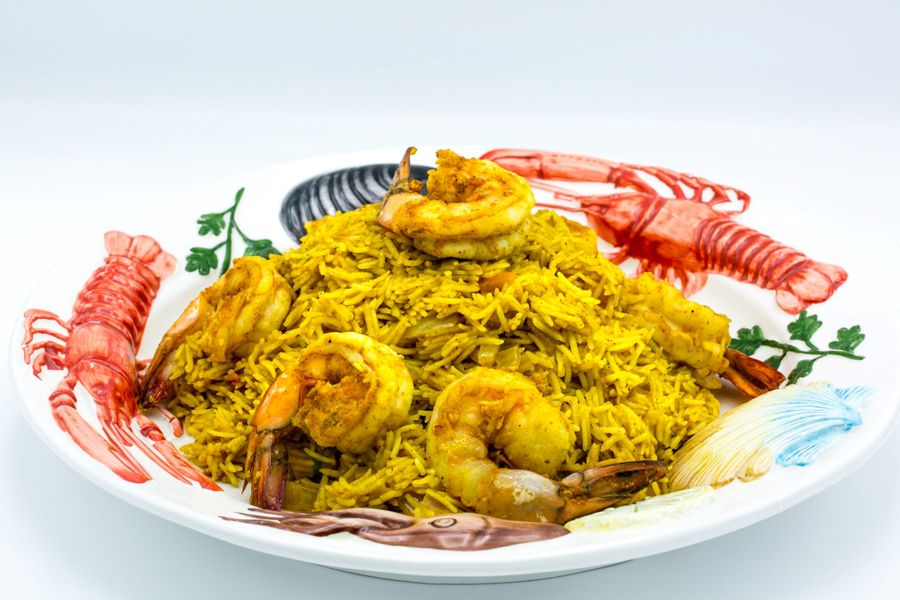

نقدم لكم اشهي وألذ الاطباق والمأكولات الشرقية والعربية
أهم الأطباق التي يقدمها المطعم
الكنعد نوع من أنواع الأسماك التي تشبه سمك التونة ، ويطهى بطريقة سهلة وبسيطة لذا تميز به أهل المنطقة الشرقية، إذ يقطع سمك الكنعد إلى شرائح ثم يقلى بالزيت ويقدم مع السلطة.
يزرع الأرز الحساوي في مدينة الأحساء لذلك سمي بهذا الاسم، و لونه بني مائل للأحمرار ، وأهم ما يميزه أنه يصبح ألذ بعد إضافة التوابل والبهارات ، والمكسرات، ويمكن إعداد المحموس والمشخول بالدجاج، أو باللحم مع الرز الحساوي. ويعتبر الأرز الحساوي من المحاصيل الزراعية التي تزرع في المناطق الحارة، حيث يحتاج إلى درجات حرارة تصل أحيانا إلى 48 درجة مئوية، كما أنه يستهلك مياهاً كثيرة أثناء زراعته رغم أن جذوره تبقى محتفظة بالماء مدة طويلة
المكبوس وهو من أطيب الأكلات وأشهرها في المنطقة الشرقية وفي الدول الخليجية ، ويمكن تحضيره مع السمك أو الدجاج ، وأحيانا مع اللحم ، ويطبخ مع الأرز والبهارات التي تجعله من أطيب الطبخات التي تعد في منطقة الخليج العربي.
تعد حلوى السّاقو الخليجية من الأطباق الحلوة ، وهي من الحلويات الشعبية المعروفة في دول الخليج العربي، ويفضل تقديمها مع القهوة العربية، وهي عبارة عن حبيبات بيضاء تستخرج من شجرة الساقو في دول شرق آسيا.
كبسة الربيان من الطبخات المميزة في المنطقة الشرقية ، ويتم تحضير كبسة الربيان بطريقة واحدة في أغلب مناطق ومدن الخليج العربي والتي تعتمد في إعدادها على الأرز والربيان مع صلصة الطماطم والبهارات
| الصنف | السعر |
|---|---|
| الكنعد | 150$ |
| الارز الحساوي | 120$ |
| المكبوس | 140$ |
| الساقو | 190$ |
| كبسة الربيان | 200$ |